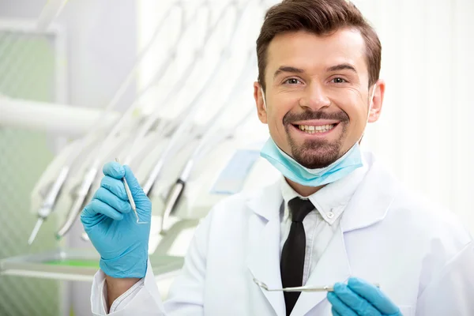
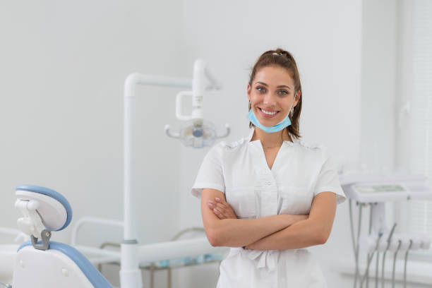

НАШИ ЛУЧШИЕ СОТРУДНИКИ
В нашей клинике работают только мастера своего дела, поэтому можете не сомневаться в их профессионализме! Даже если нужно вылечить 32 зуба, они вылечат все 33!!!

Романов Кассиан Всеволодович - старший стоматолог-хирург нашей клиники.
Провел более 100 операций, проконсультировал втрое больше, является почетным работником года в 2014 году, а также героем Российской Федерации за проведение одновременно 19 операций по удалению зуба мудрости.

А вот и победитель в номинации "Мисс ВырвиЗуб 2019" - наша прекраснейшая Носкова Ирма Геннадьевна, стоматолог-онколог, работающая в нашей компании уже более 10 лет!
Получив 2 нежелательных технических образования, Ирма не отчаялась и отучилась еще 10 лет на стоматолога для того, чтобы помогать обычным людям лечить зубы!
За ее плечами не только множественные операции, а также психоснимающие лекции, которые помогают снять стресс пациентам, у которых была обнаружена такая страшная болезнь, как онкология

Ну и конечно же тот. кто в представлении не нуждается, но мы просто не можем не представить его - велкий врач и ученый, профессор медицинских наук, главврач, владелец компании "ВырвиЗуб", да и просто хороший парень -
Кулаков Дмитрий Александрович. Также он является создателем данного сайта, а соответсвенно и данной курсовой!